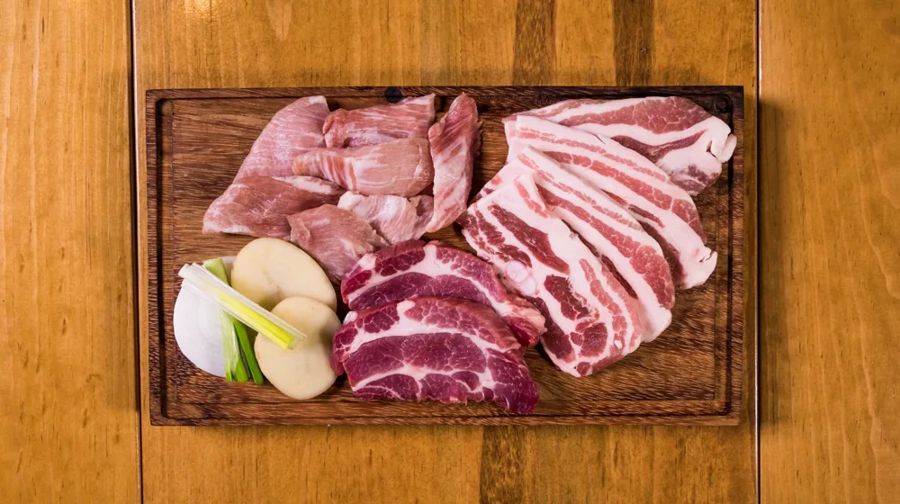

종가 프라이빗 다이닝, 이것 놓치면 후회! 완벽 체크리스트 7가지
사진: Luis Becerra Fotógrafo / Pexels (무료 이미지, 출처 표기)
종가 프라이빗 다이닝이란? 전통의 깊이를 맛보다

특별한 날, 소중한 분과 함께 깊이 있는 미식 경험을 찾으시나요? 오랜 전통과 스토리가 담긴 종가 프라이빗 다이닝은 단순한 식사를 넘어 문화적 가치를 선사합니다. 하지만 막상 예약하려니 어떤 점을 확인해야 할지 막막할 때가 많죠. 이 글에서는 종가 프라이빗 다이닝을 200% 즐기기 위해 반드시 확인해야 할 7가지 핵심 포인트를 정리해 드립니다.
종가 프라이빗 다이닝은 오랜 세월 대대로 이어져 온 종갓집의 전통 음식을 현대적으로 재해석하여, 오붓하고 격식 있는 공간에서 맛볼 수 있도록 제공하는 특별한 식사 경험입니다. 단순한 한정식집을 넘어, 각 종가만의 독특한 조리법과 스토리가 담긴 음식을 맛보며 한국 전통문화의 깊이를 느낄 수 있다는 점이 특징입니다. 특히 귀한 손님 접대, 가족 모임, 상견례 등 특별한 자리를 위해 많이 찾습니다.
후회 없는 선택! 종가 프라이빗 다이닝 체크리스트 7가지
종가 프라이빗 다이닝을 성공적으로 선택하려면 여러 요소를 꼼꼼히 따져봐야 합니다. 아래 7가지 체크리스트를 활용하여 만족스러운 미식 경험을 계획해 보세요.
- 메뉴 구성 및 스토리: 각 종가만의 비법과 스토리가 담긴 고유 메뉴가 있는지, 제철 식재료를 활용하는지 확인하세요. 음식에 담긴 이야기와 의미를 알면 더욱 풍성한 경험이 됩니다.
- 공간의 품격과 프라이버시: 방문 목적에 맞는 개별 룸의 크기와 인테리어를 살펴보세요. 조용하고 오붓한 분위기, 한옥의 미를 살린 공간은 특별함을 더합니다.
- 서비스 수준 및 설명: 음식에 대한 자세한 설명과 친절한 응대는 미식 경험의 만족도를 높입니다. 예약 시 서비스 구성에 대해 문의하는 것도 좋습니다.
- 접근성 및 주차 편의: 대중교통 접근성과 충분한 주차 공간 확보 여부는 중요한 요소입니다. 특히 서울 도심 외곽에 위치한 곳이라면 더욱 신경 써야 합니다.
- 예산 및 가격대: 코스별 가격, 추가 요금, 주류 비용 등을 명확히 확인하여 예상 예산을 벗어나지 않도록 합니다. 팁 문화가 있는지 등도 미리 알아보세요.
- 이용 시간 및 좌석 형태: 식사 시간 제한이 있는지, 좌식과 입식 중 어떤 형태의 좌석이 준비되어 있는지 확인하여 편안한 식사를 계획하세요.
- 온라인 후기 및 평점: 실제 방문객들의 솔직한 후기는 선택에 큰 도움이 됩니다. 특히 불만 사항이 어떻게 해결되었는지 살펴보는 것이 중요합니다.
종가 메뉴, 제철 식재료 확인은 필수: 품격 있는 미식 경험
종가 다이닝의 핵심은 계절의 변화를 담은 제철 식재료와 대대로 내려오는 고유의 조리법에 있습니다. 방문 전 제공되는 메뉴 구성과 주요 식재료를 미리 확인하는 것이 좋습니다. 특정 종가만의 특별한 발효 음식이나 장류를 사용하는지, 혹은 어떤 식재료가 그 계절에 가장 신선하게 제공되는지 문의해 보세요.
음식 하나하나에 담긴 역사와 스토리를 알면 단순한 맛을 넘어 깊은 감동을 느낄 수 있습니다. 만약 특정 음식에 대한 알레르기나 선호하지 않는 재료가 있다면 예약 시 미리 고지하여 조율하는 것도 좋은 방법입니다. 이처럼 메뉴와 식재료에 대한 이해는 미식 경험의 깊이를 더하는 중요한 요소입니다.
예약 절차와 성공적인 다이닝을 위한 팁
대부분의 종가 프라이빗 다이닝은 소규모로 운영되므로, 여유로운 예약이 필수입니다. 특히 주말이나 기념일 등 특별한 날에는 한 달 이상 미리 예약해야 원하는 날짜와 시간에 이용할 수 있습니다. 2026년 11월 기준, 일반적으로 전화 예약이 많지만, 최근에는 온라인 예약 시스템을 갖춘 곳도 늘고 있습니다.
예약 시에는 인원수, 방문 목적(생일, 상견례 등), 좌식/입식 선호 여부, 주차 여부 등을 명확히 전달해야 합니다. 또한, 갑작스러운 일정 변경에 대비하여 취소 및 환불 정책을 미리 확인하는 것이 중요합니다. 정확한 사항은 공식 홈페이지나 해당 기관에서 다시 확인하시길 권장합니다.
종가 다이닝 에티켓 및 추가 활용 가이드
종가 프라이빗 다이닝은 품격 있는 자리인 만큼 기본적인 에티켓을 지키는 것이 좋습니다. 과도하게 격식 있는 복장보다는 단정하고 편안한 스마트 캐주얼이 적당합니다. 음식이 서빙될 때는 제공되는 설명을 주의 깊게 듣고, 음식 하나하나에 담긴 정성과 스토리에 대한 이해를 바탕으로 경험을 음미하는 자세가 중요합니다.
또한, 다른 손님들의 프라이버시를 위해 과도한 소음이나 플래시를 사용한 사진 촬영은 자제하는 것이 바람직합니다. 종가 다이닝은 외국인 손님에게 한국의 전통문화를 소개하거나, 격식 있는 비즈니스 접대, 또는 부모님 생신 등 가족 간의 중요한 모임에 특히 추천합니다. 각 종가의 주력 메뉴나 콘셉트에 따라 적합한 모임의 성격이 다를 수 있으니, 예약 전 문의하여 목적에 맞는 곳을 선택하는 지혜가 필요합니다.
🔗 이 글도 함께 보면 좋아요: 종가음식 프라이빗 다이닝, 가격대별 경험 완벽 비교 가이드